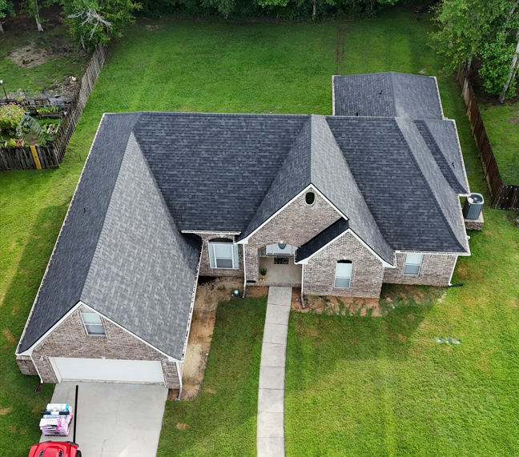
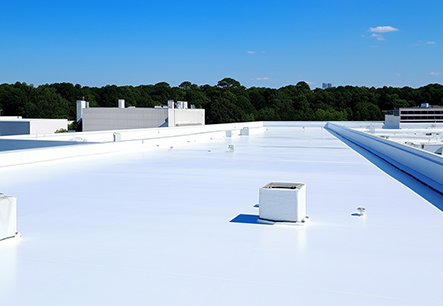
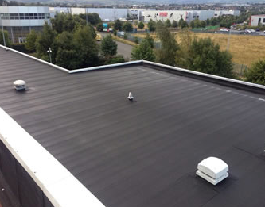

Browse examples of residential and commercial roofing work completed across Mississippi & parts of Alabama.
The roofing materials we install most often.

Architectural asphalt shingles — the most popular residential choice.

Exposed-fastener metal panel — durable and budget-friendly.

Concealed-fastener metal roofing with clean, modern lines.

Single-ply membrane for flat and low-slope commercial roofs.

Layered low-slope system built for tough weather exposure.

Durable rubber membrane for long-lasting flat-roof protection.
Verified 5-star reviews from our Google Business profile.

Very pleased with Durden Roof Care. They are very helpful and professional. Great response to any questions you may have. Also they worked with my insurance from beginning to end. Blessing. Definitely recommend.
Durden roofing is the go to roofer on the MS Gulf Coast! Very professional throughout the entire process, estimate to cleanup. The Durden team also made the insurance process easy and quick. Their fortified roof is saving me 20% on wind insurance! Far superior work compared to the roofer I used 13 years ago. Durden is the only one to consider if you need a new roof!
Outstanding experience from start to finish. Cody, Brittany, Jennifer, Jose, and Seth were all professional and made the whole process smooth. Highly recommend Durden Roof Care!
Follow along and see more of our completed projects.